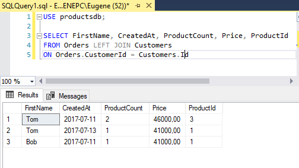
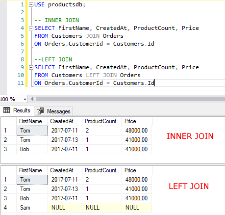
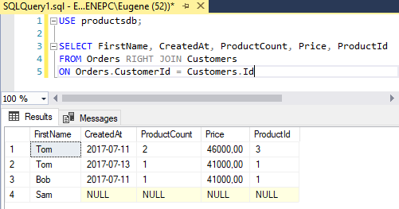
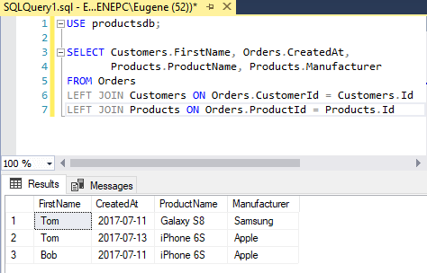
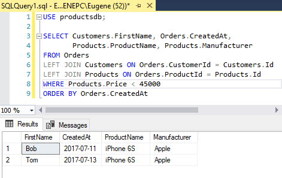
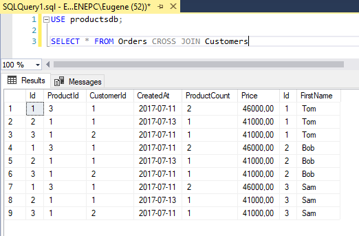

OUTER JOIN
В предыдущей теме было рассмотрено внутреннее соединение таблиц. Но MS SQL Server также поддерживает внешнее соединение или outer join. В отличие от inner join внешнее соединение возвращает все строки одной или двух таблиц, которые участвуют в соединении.
Outer Join имеет следующий формальный синтаксис:
1 2 3 4 | SELECT столбцыFROM таблица1 {LEFT|RIGHT|FULL} [OUTER] JOIN таблица2 ON условие1 [{LEFT|RIGHT|FULL} [OUTER] JOIN таблица3 ON условие2]... |
Перед оператором JOIN указывается одно из ключевых слов LEFT, RIGHT или FULL, которые определяют тип соединения:
LEFT: выборка будет содержать все строки из первой или левой таблицы
RIGHT: выборка будет содержать все строки из второй или правой таблицы
FULL: выборка будет содержать все строки из обоих таблиц
Также перед оператором JOIN может указываться ключевое слово OUTER, но его применение необязательно. Далее после JOIN указывается присоединяемая таблица, а затем идет условие соединения.
Например, соединим таблицы Orders и Customers:
1 2 3 | SELECT FirstName, CreatedAt, ProductCount, Price, ProductId FROM Orders LEFT JOIN Customers ON Orders.CustomerId = Customers.Id |
Таблица Orders является первой или левой таблицей, а таблица Customers - правой таблицей. Поэтому, так как здесь используется
выборка по левой таблице, то вначале будут выбираться все строки из Orders, а затем к ним по условию Orders.CustomerId = Customers.Id будут
добавляться связанные строки из Customers.

По вышеприведенному результату может показаться, что левостороннее соединение аналогично INNER Join, но это не так. Inner Join объединяет строки из дух таблиц при соответствии условию. Если одна из таблиц содержит строки, которые не соответствуют этому условию, то данные строки не включаются в выходную выборку. Left Join выбирает все строки первой таблицы и затем присоединяет к ним строки правой таблицы. К примеру, возьмем таблицу Customers и добавим к покупателям информацию об их заказах:
1 2 3 4 5 6 7 8 9 | -- INNER JOINSELECT FirstName, CreatedAt, ProductCount, Price FROM Customers JOIN Orders ON Orders.CustomerId = Customers.Id--LEFT JOINSELECT FirstName, CreatedAt, ProductCount, Price FROM Customers LEFT JOIN Orders ON Orders.CustomerId = Customers.Id |

Изменим в примере выше тип соединения на правостороннее:
1 2 3 | SELECT FirstName, CreatedAt, ProductCount, Price, ProductId FROM Orders RIGHT JOIN Customers ON Orders.CustomerId = Customers.Id |
Теперь будут выбираться все строки из Customers, а к ним уже будет присоединяться связанные по условию строки из таблицы Orders:

Поскольку один из покупателей из таблицы Customers не имеет связанных заказов из Orders, то соответствующие столбцы, которые берутся из Orders, будут иметь значение NULL.
Используем левостороннее соединение для добавления к заказам информации о пользователях и товарах:
1 2 3 4 5 | SELECT Customers.FirstName, Orders.CreatedAt, Products.ProductName, Products.ManufacturerFROM Orders LEFT JOIN Customers ON Orders.CustomerId = Customers.IdLEFT JOIN Products ON Orders.ProductId = Products.Id |

И также можно применять более комплексные условия с фильтрацией и сортировкой. Например, выберем все заказы с информацией о клиентах и товарах по тем товарам, у которых цена меньше 45000, и отсортируем по дате заказа:
1 2 3 4 5 6 7 | SELECT Customers.FirstName, Orders.CreatedAt, Products.ProductName, Products.ManufacturerFROM Orders LEFT JOIN Customers ON Orders.CustomerId = Customers.IdLEFT JOIN Products ON Orders.ProductId = Products.IdWHERE Products.Price < 45000ORDER BY Orders.CreatedAt |

Или выберем всех пользователей из Customers, у которых нет заказов в таблице Orders:
1 2 3 | SELECT FirstName FROM CustomersLEFT JOIN Orders ON Customers.Id = Orders.CustomerIdWHERE Orders.CustomerId IS NULL |
Также можно комбинировать Inner Join и Outer Join:
1 2 3 4 5 6 | SELECT Customers.FirstName, Orders.CreatedAt, Products.ProductName, Products.ManufacturerFROM Orders JOIN Products ON Orders.ProductId = Products.Id AND Products.Price < 45000LEFT JOIN Customers ON Orders.CustomerId = Customers.IdORDER BY Orders.CreatedAt |
Вначале по условию к таблице Orders через Inner Join присоединяется связанная информация из Products, затем через Outer Join добавляется информация из таблицы Customers.
Cross Join
Cross Join или перекрестное соединение создает набор строк, где каждая строка из одной таблицы соединяется с каждой строкой из второй таблицы. Например, соединим таблицу заказов Orders и таблицу покупателей Customers:
1 | SELECT * FROM Orders CROSS JOIN Customers |

Если в таблице Orders 3 строки, а в таблице Customers то же три строки, то в результате перекрестного соединения создается 3 * 3 = 9 строк вне зависимости, связаны ли данные строки или нет.
При неявном перекрестном соединении можно опустить оператор CROSS JOIN и просто перечислить все получаемые таблицы:
1 | SELECT * FROM Orders, Customers |